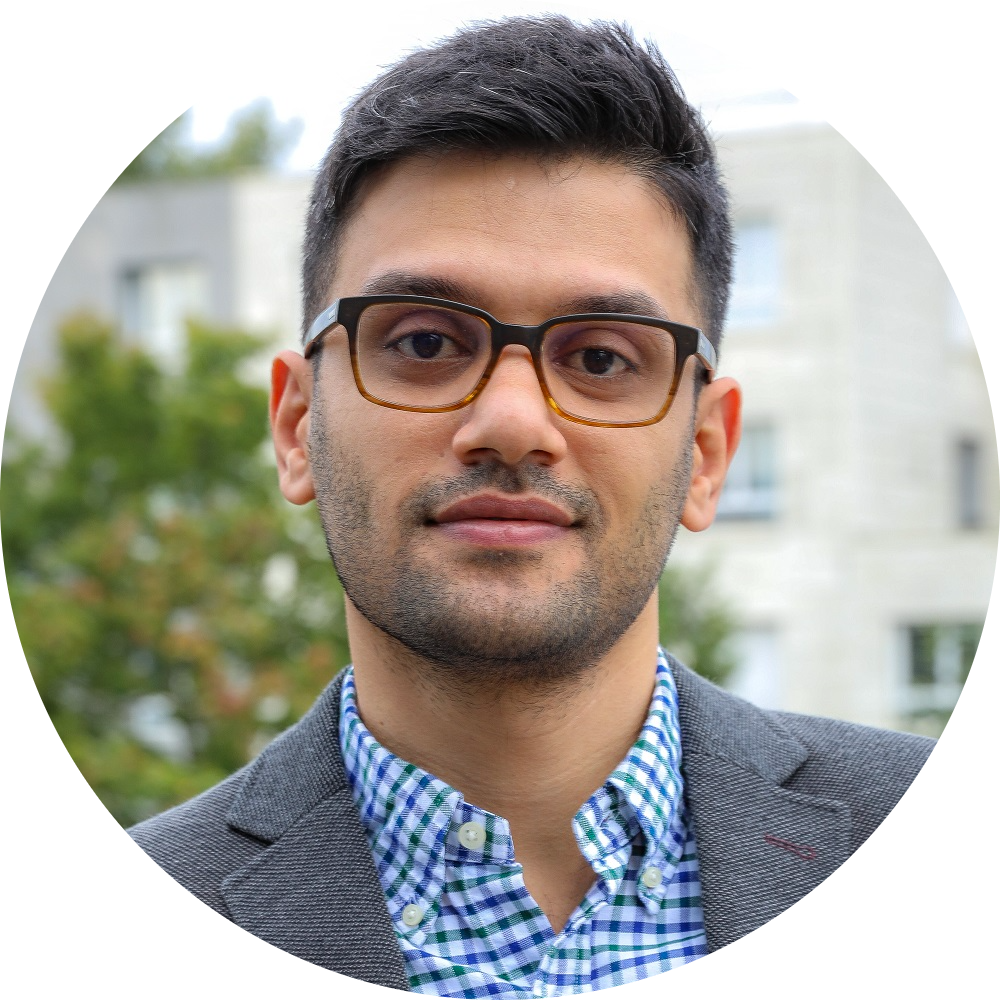

|  |
Salim Rostami
Professor of Operations Management Assistant professor at IESEG School of Management (Lille & Paris, France). PhD in Operations Research from KU Leuven (Leuven, Belgium). Interested in combinatorial optimization, sequencing, and scheduling, among others. A beer fan, tech enthusiast, and online gamer! I watch too much TV. Trying to learn to play some musical instruments. My mother tongue is Persian (persan, Farsi), English is my second language, et je parle un peu français aussi. |

| 2019 – present: | Assistant Professor Operations Management IESEG School of Management |
| 2015 – 2019: | Teaching and Research Assistant Operations Management IESEG School of Management |
| 2013 – 2015: | Research Assistant Healthcare Optimization École des Mines de Saint-Étienne |
| 2015 – 2019: |
PhD in Applied Economics KU Leuven, Leuven, Belgium Area of specialization: Operations Research Dissertation: New Models and Methods for Sequencing and Project Scheduling |
| 2012 – 2013: |
M.Sc. in Advanced Business Studies KU Leuven, Leuven, Belgium Area of specialization: Operations Research Thesis: Stochastic resource constrained project scheduling |
| 2007 – 2012: |
B.Sc. in Industrial Engineering Ferdowsi University, Mashhad, Iran Undergraduate project: University course scheduling problem |